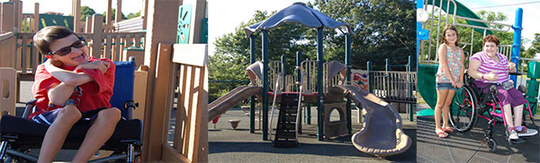

Download the GuideRead an introduction by the author, Gopen Fellow, Marie Saldi
This project was funded by the Gopen Fellowship through the Massachusetts Developmental Disabilities Network.
My name is Marie. I have been in a wheelchair since I was six years old. When I was little I couldn’t get on playgrounds and I felt left out. A long time ago
I came up with the idea that I would change things not only for me but for others. When I heard about the Gopen Fellowship I knew this was my chance to make a difference. My goal has been to educate people about the importance of accessible equipment and to advocate for children and parents with disabilities.
I visited twenty-one different playgrounds that claimed to be accessible. I found that although most of the playgrounds are accessible some of the playgrounds weren’t like they claimed to be. The playgrounds included in this booklet are what I consider to be accessible. I created this booklet so that anyone, no matter what their capabilities are, can use it as a resource to find a playground they can enjoy. I want kids to be able to play together side by side and enjoy their childhood with the least amount of limitations.
—Marie Saldi, 2014-15 Gopen Fellow